Traversing a collection without exposing whether it is stored as an array, a list or a tree is the:
- Iterator pattern
- Observer pattern
- Composite pattern
- Facade pattern
Show answer
A. Iterator pattern
Behavioural patterns distribute behaviour among objects efficiently and safely. Iterator gives clients a standard way (hasNext(), next()) to walk through a collection without knowing whether it is an array, a list or a tree: the collection hands out an iterator that keeps its own position. Observer sets up a one-to-many dependency: observers attach to a subject, and when the subject’s state changes it calls update() on every registered observer, so they stay in sync without the subject knowing their concrete classes.
Iterator interface (hasNext, next), ConcreteIterator (keeps the index), Aggregate/Container (getIterator), ConcreteAggregate.
Consistent traversal; collection internals can change without changing clients; several traversals (forward, reverse) over the same data.
Subject (attach, detach, notify, holds state and an observer list), Observer (update), ConcreteObservers.
setState() → notifyAllObservers() → each observer.update() → observer reads subject.getState().
Final 252 Q7-2 (2.5 marks) asked you to recognise Observer in a weather-station scenario and draw its class diagram. Iterator has not been examined yet; expect it as a “which pattern?” question.
Every original slide is shown unchanged. Yellow marks on a slide point to a numbered note: hover or tap a mark to jump to its note, and hover a note to see its marks. Questions tagged Past exam appeared on a real paper; Prediction questions are likely angles, not confirmed.
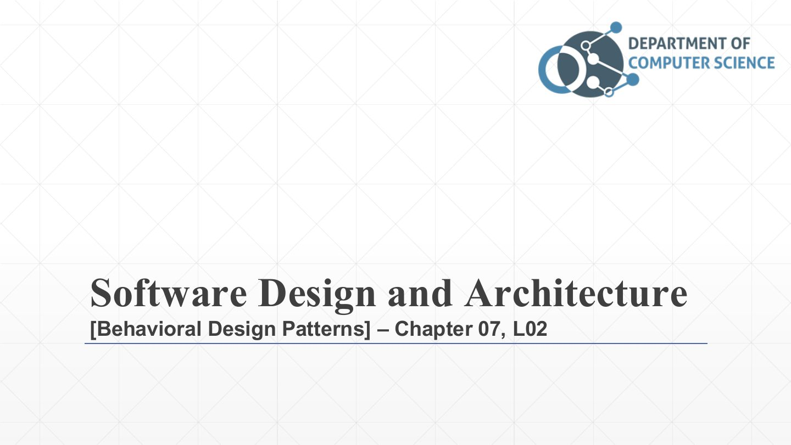
The last design-pattern lecture: behavioural patterns, which are about how objects interact and share work. Two are covered: Iterator and Observer.
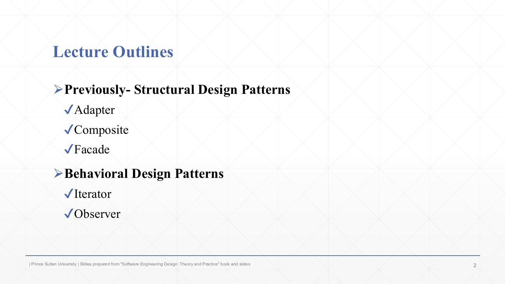
Previously: the structural patterns Adapter, Composite and Facade.
Today: Iterator and Observer.
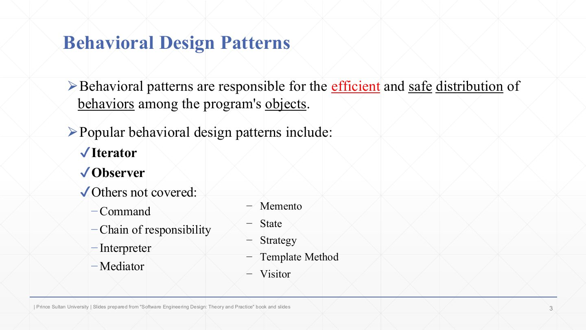
Behavioural patterns are responsible for the efficient and safe distribution of behaviours among a program’s objects: who does what, and how they communicate.
This course covers Iterator and Observer.
Others exist but are not covered: Command, Chain of Responsibility, Interpreter, Mediator, Memento, State, Strategy, Template Method, Visitor.
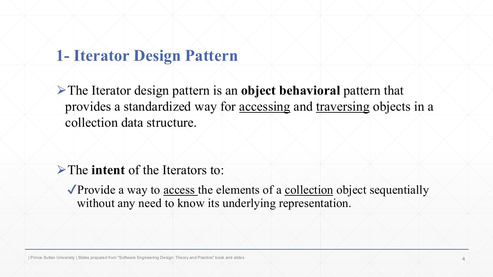
Iterator is an object behavioural pattern that gives a standard way of accessing and traversing the objects in a collection.
Its intent: provide a way to access the elements of a collection sequentially without knowing its underlying representation. The client asks “is there another one?” and “give me the next one”, and never sees whether the data is an array, a linked list or a tree.
Traversing a collection without exposing whether it is stored as an array, a list or a tree is the:
A. Iterator pattern
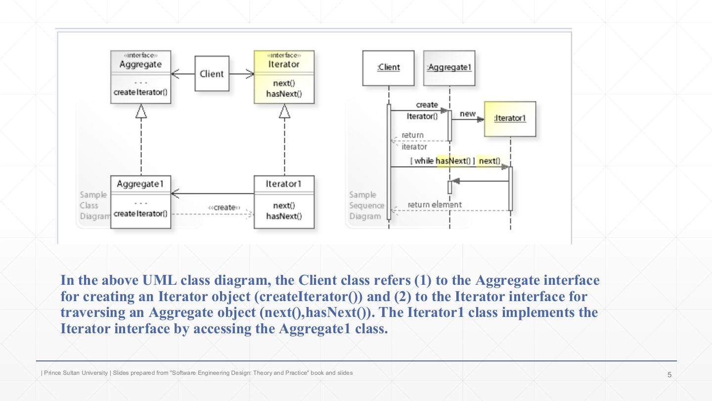
In the class diagram (left), the Client refers (1) to the Aggregate interface to create an iterator with createIterator()…
…and (2) to the Iterator interface to traverse the aggregate with next() and hasNext().
Iterator1 implements Iterator by accessing Aggregate1, which creates it. The sequence diagram (right) shows the run: the client calls createIterator(), Aggregate1 creates an Iterator1 and returns it, then the client loops [while hasNext()] next() and gets one element each time.
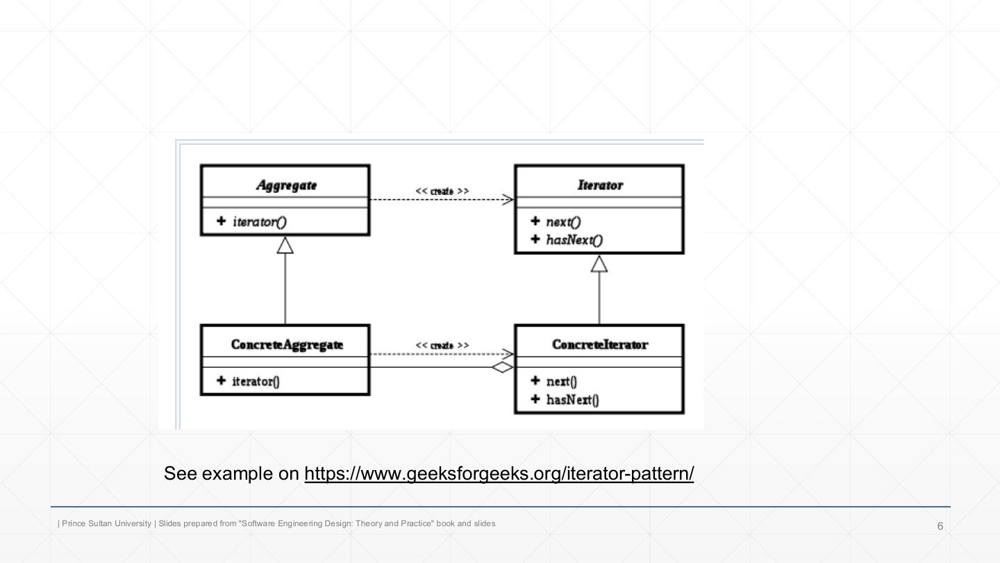
The generic structure: an Aggregate with iterator() and an Iterator with next() and hasNext() (italic = abstract), linked by «create».
ConcreteAggregate implements iterator() to create a ConcreteIterator, which implements next() and hasNext() and keeps a reference to its aggregate (the diamond) so it can read the elements.
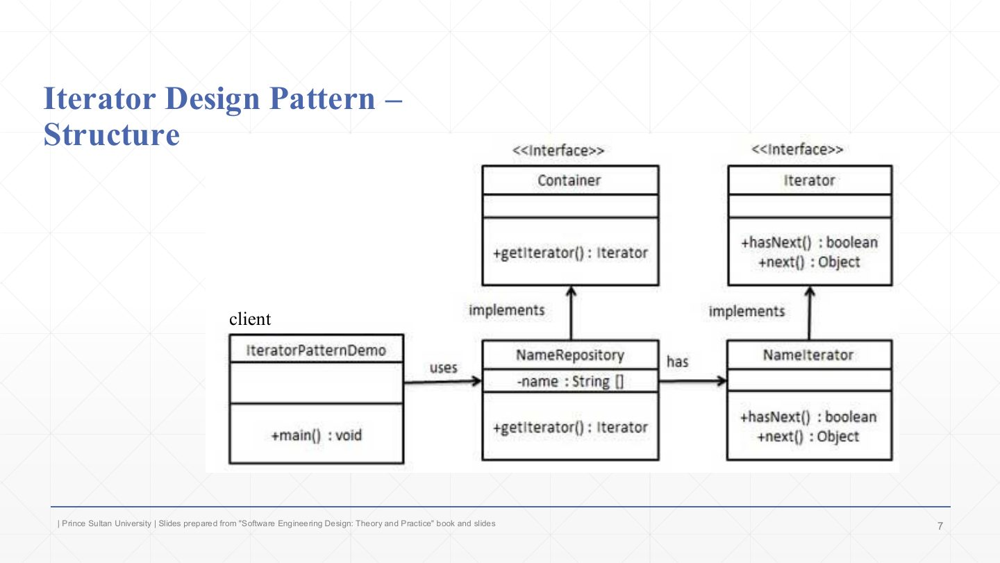
The example’s structure: «Interface» Container (getIterator(): Iterator) plays the aggregate; «Interface» Iterator has hasNext(): boolean and next(): Object.
NameRepository implements Container and holds -name : String[]; it “has” a NameIterator, which implements Iterator.
The client IteratorPatternDemo uses NameRepository through the interfaces.
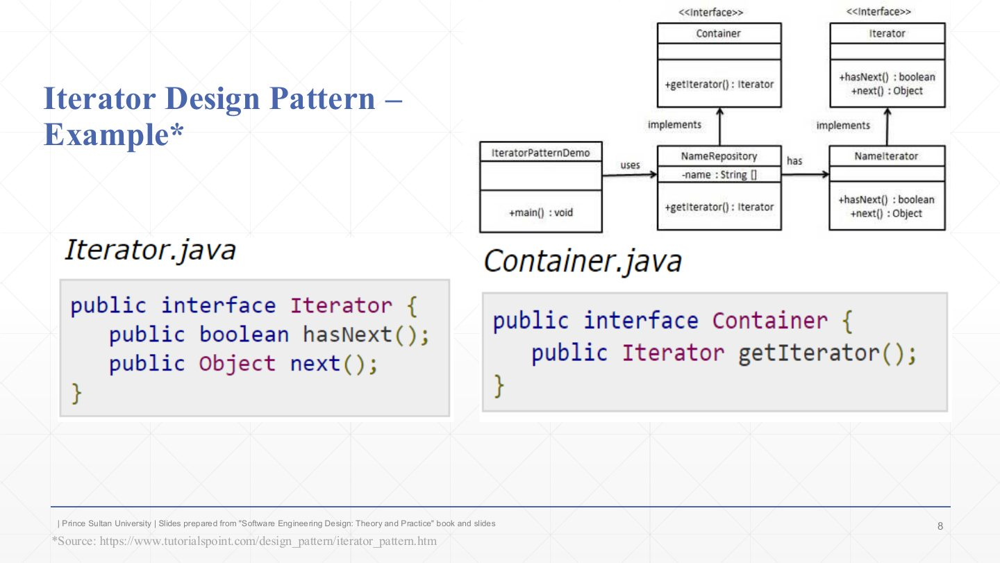
The two interfaces:
| Code | What it does |
|---|---|
public interface Iterator { public boolean hasNext(); public Object next(); } | The traversal contract: is there another element, and give me it. |
public interface Container { public Iterator getIterator(); } | The aggregate contract: hand out an iterator. |
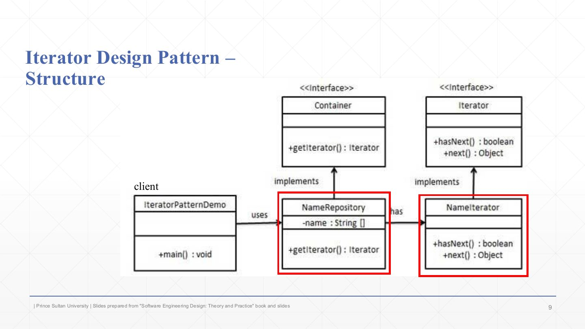
The diagram with the two concrete classes outlined: NameRepository (the concrete collection) and NameIterator (the concrete iterator). They are written next.
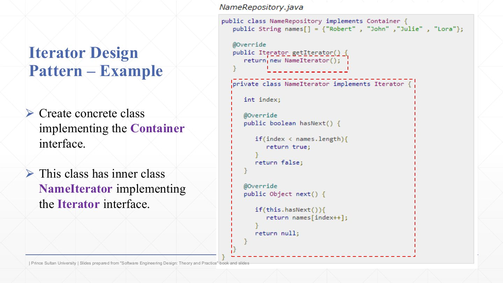
Create a concrete class implementing the Container interface.
It has an inner class NameIterator implementing Iterator:
| Code | What it does |
|---|---|
public class NameRepository implements Container { public String names[] = {"Robert", "John", "Julie", "Lora"}; | The data, stored as an array. |
@Override public Iterator getIterator() { return new NameIterator(); } | Hands out a fresh iterator each time. |
private class NameIterator implements Iterator { int index; | An inner class, so it can read names directly; index is its own cursor. |
public boolean hasNext() { if (index < names.length) { return true; } return false; } | Another element exists while the cursor is inside the array. |
public Object next() { if (this.hasNext()) { return names[index++]; } return null; } } } | Return the current name and advance; null past the end. |
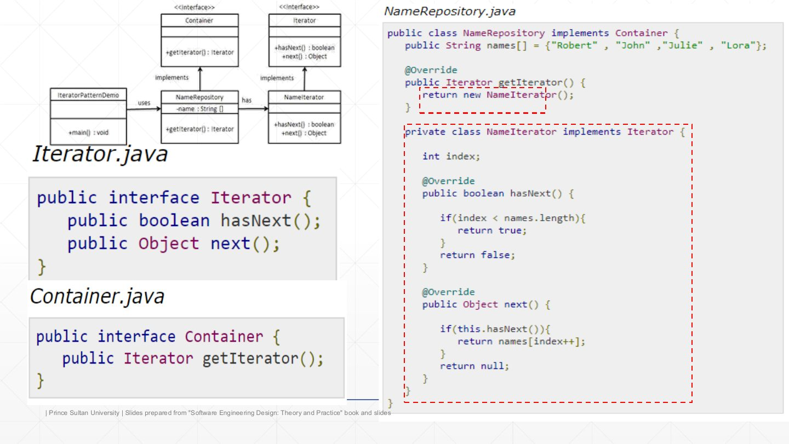
All the code on one slide: the interfaces on the left and NameRepository with its inner NameIterator on the right. The client only ever sees Container and Iterator, so the names could move into a list or a database without changing it.
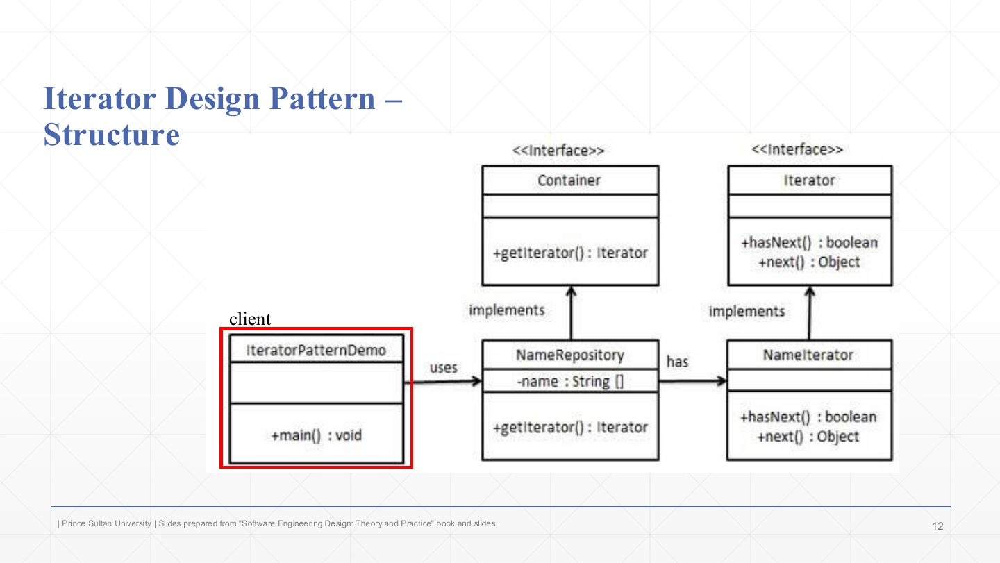
The diagram with the client IteratorPatternDemo outlined: next, the code that uses the repository.
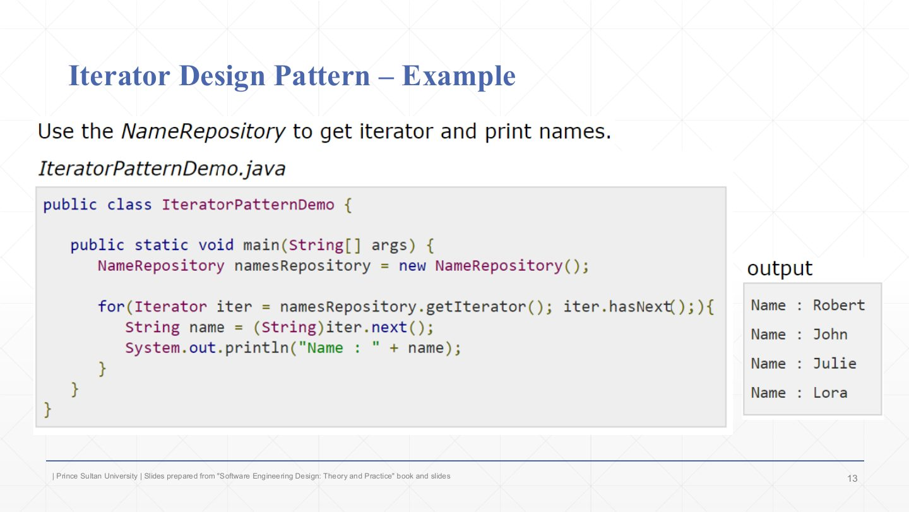
The client:
| Code | What it does |
|---|---|
NameRepository namesRepository = new NameRepository(); | The collection. |
for (Iterator iter = namesRepository.getIterator(); iter.hasNext();) { | Get an iterator and loop while there is a next element. |
String name = (String) iter.next(); System.out.println("Name : " + name); } | Read and print each one. |
Output: “Name : Robert”, “Name : John”, “Name : Julie”, “Name : Lora”.
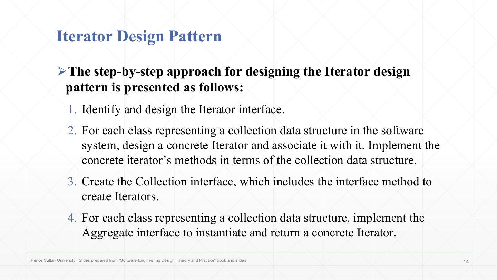
1. Design the Iterator interface.
2. For each collection class, design a concrete iterator and associate it with the collection; implement its methods in terms of that data structure.
3. Create the collection (aggregate) interface with a method that creates iterators.
4. For each collection class, implement that interface so it instantiates and returns its concrete iterator.
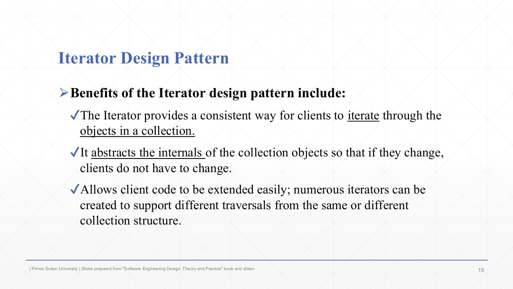
A consistent way for clients to iterate through any collection.
It abstracts the internals of the collection, so if they change, clients don’t.
Client code is easy to extend: many iterators can support different traversals (forward, reverse, filtered) over the same or different collections.
Give two benefits of the Iterator pattern.
Clients traverse every collection the same way (hasNext/next); the collection’s internal representation is hidden, so it can change without affecting clients; several iterators can provide different traversals (e.g. forward and reverse) of the same collection.
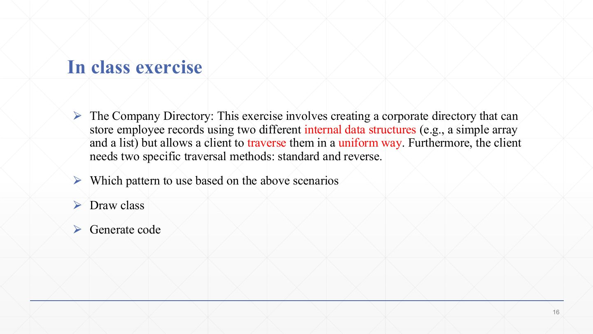
The exercise: a company directory stores employee records in two different internal data structures (an array and a list) but lets clients traverse both the same way.
The client also needs two traversals: standard and reverse.
Answer: Iterator. A DirectoryIterator interface (hasNext(), next()); ArrayDirectory and ListDirectory each implement a Directory interface with createIterator() and createReverseIterator(), returning concrete iterators that know their structure. The client loops with hasNext()/next() whichever directory and direction it uses.
A company directory stores employees in an array in one version and a linked list in another, and clients need forward and reverse traversal of both. Which pattern, and what classes?
Iterator. An EmployeeIterator interface (hasNext(), next()); a Directory interface with createIterator() and createReverseIterator(); ArrayDirectory and ListDirectory implement Directory and return ArrayForwardIterator/ArrayReverseIterator and ListForwardIterator/ListReverseIterator. The client uses only Directory and EmployeeIterator.
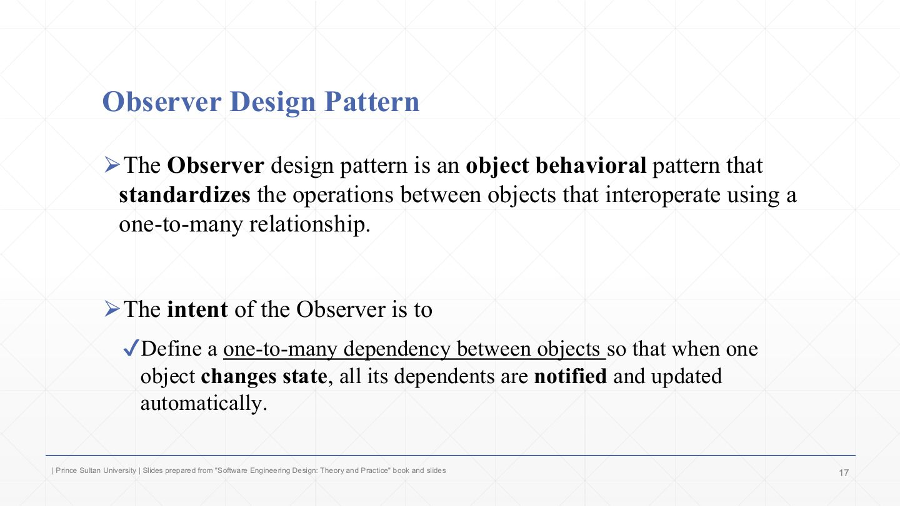
Observer is an object behavioural pattern that standardises how objects in a one-to-many relationship work together.
Its intent: define a one-to-many dependency so that when one object changes state, all its dependents are notified and updated automatically. Like a newsletter: subscribe once, and every new issue is pushed to you.
Global Weather Sync: when the primary weather station’s temperature changes, all registered city dashboards update instantly, in Celsius and Fahrenheit. Which pattern? Draw its class diagram.
Pattern: Observer. A one-to-many dependency: when the subject changes, all observers are notified automatically. Subject (interface): attach(), detach(), notifyObservers(). WeatherStation (concrete subject): holds the temperature and a list of observers; setTemperature() stores the value and calls notifyObservers(). Observer (interface): update(temp). CelsiusDashboard and FahrenheitDashboard (concrete observers) show the temperature in their own unit (Fahrenheit = t × 9/5 + 32). Diagram: WeatherStation realizes Subject; the dashboards realize Observer; Subject keeps a list of Observers.
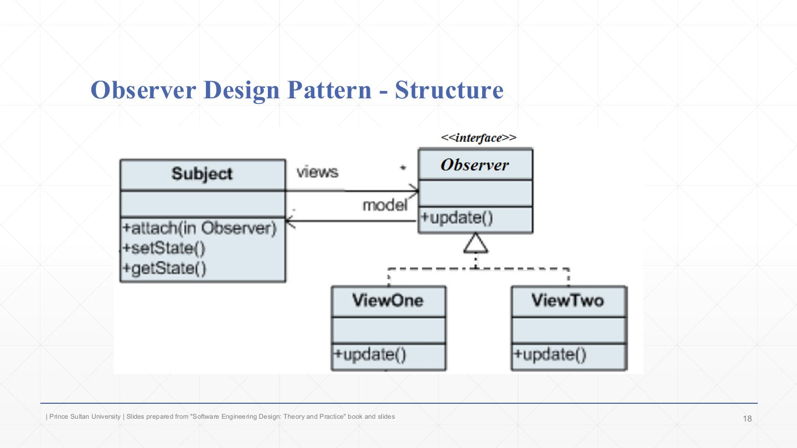
Subject: attach(in Observer) to register observers, setState() to change, getState() to read. It keeps its observers (the “views”, multiplicity \*).
«interface» Observer: update(). Each observer holds a reference back to its subject (the “model” arrow) so it can read the new state.
ViewOne and ViewTwo realise Observer, each with its own update(). This is the same mechanism MVC uses to refresh views when the model changes.
In the Observer pattern, what happens when the subject’s state changes?
The subject calls its notify method, which loops over every registered observer and calls update() on each; each observer then reads the new state (e.g. via subject.getState()) and refreshes itself.
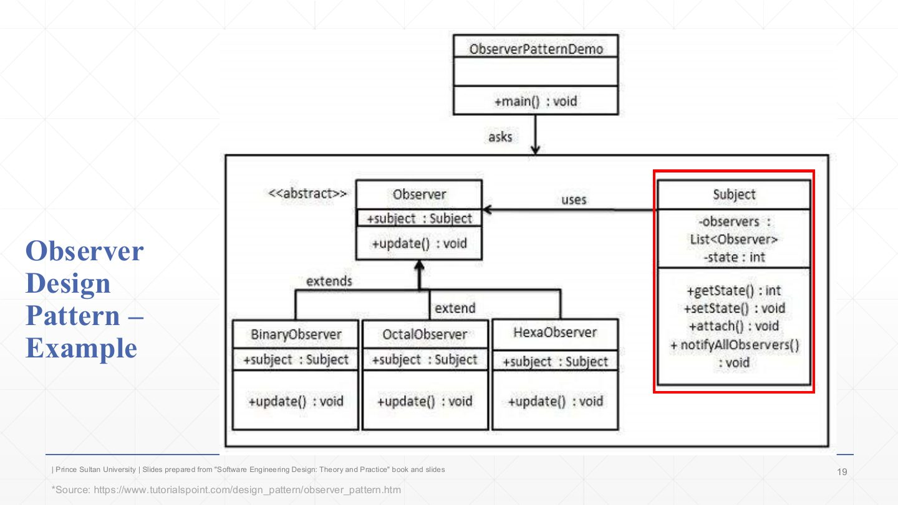
The example: a Subject with -observers: List<Observer> and -state: int, and the operations getState(), setState(), attach() and notifyAllObservers().
«abstract» Observer has +subject: Subject and +update(); BinaryObserver, OctalObserver and HexaObserver extend it.
ObserverPatternDemo is the client. Whenever the number changes, each observer prints it in its own base.
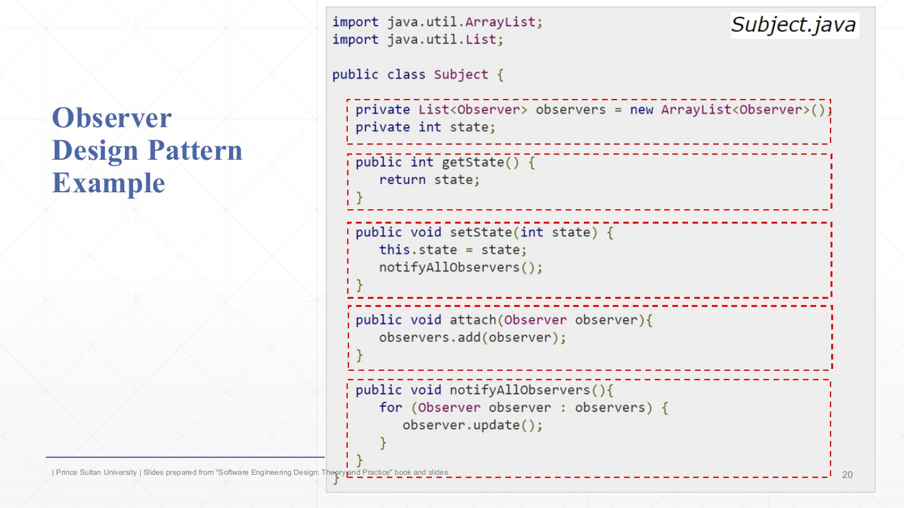
Subject.java:
| Code | What it does |
|---|---|
private List<Observer> observers = new ArrayList<Observer>(); private int state; | The registered observers and the state they care about. |
public int getState() { return state; } | Observers read the state through this. |
public void setState(int state) { this.state = state; notifyAllObservers(); } | Changing the state triggers notification: the heart of the pattern. |
public void attach(Observer observer) { observers.add(observer); } | Registration. |
public void notifyAllObservers() { for (Observer observer : observers) { observer.update(); } } | Tell every observer, without knowing their concrete classes. |
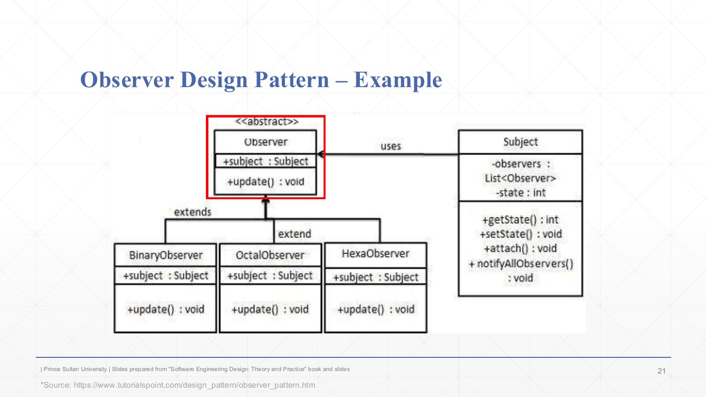
The diagram with the abstract Observer outlined: it holds +subject: Subject and declares +update().
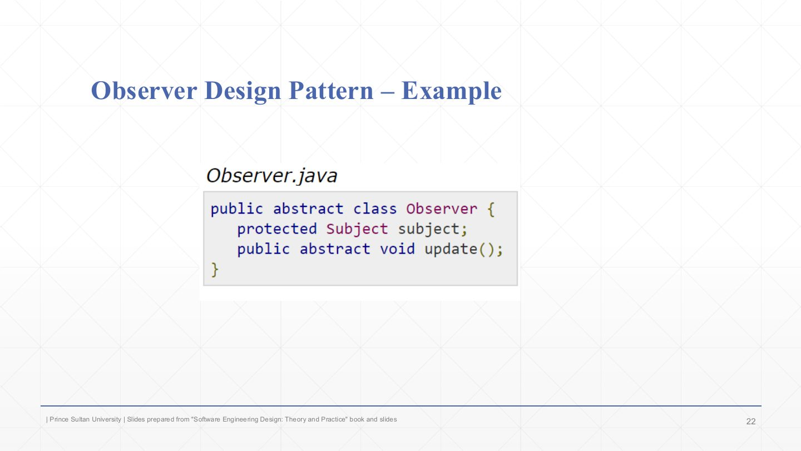
Observer.java:
| Code | What it does |
|---|---|
public abstract class Observer { protected Subject subject; | An abstract class here (an interface works too); every observer knows its subject. |
public abstract void update(); } | Called by the subject on every change. |
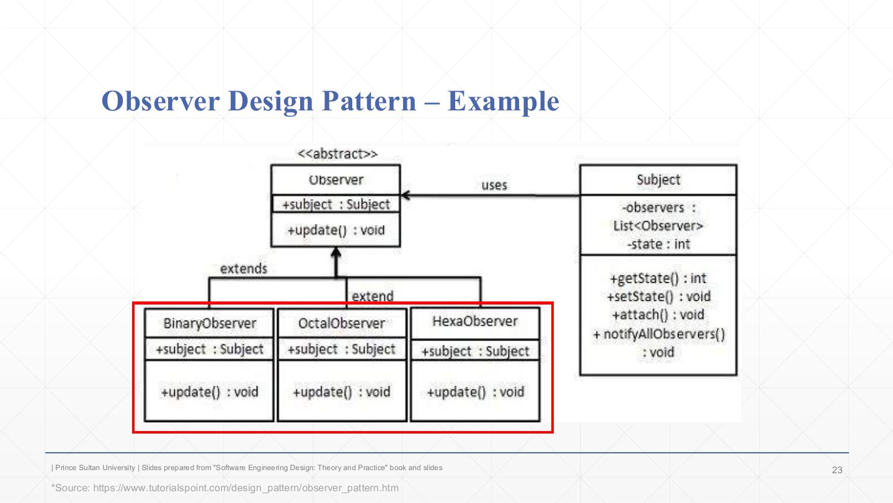
The diagram with the three concrete observers outlined: BinaryObserver, OctalObserver and HexaObserver, each implementing update() its own way.
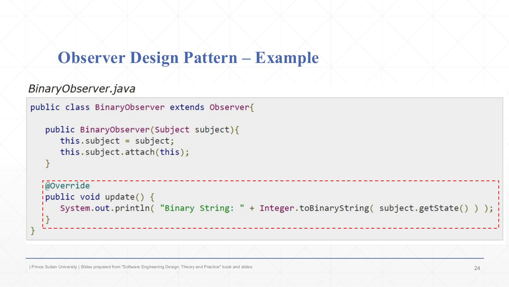
BinaryObserver.java:
| Code | What it does |
|---|---|
public BinaryObserver(Subject subject) { this.subject = subject; this.subject.attach(this); } | The observer registers itself with the subject when created. |
@Override public void update() { System.out.println("Binary String: " + Integer.toBinaryString(subject.getState())); } | On notification it pulls the new state and prints it in binary. |
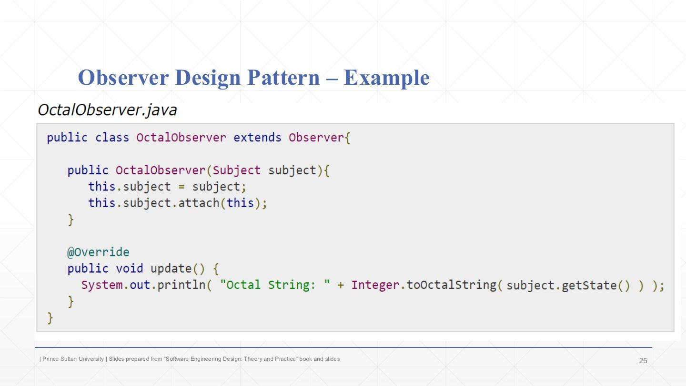
OctalObserver is identical except that update() prints Integer.toOctalString(subject.getState()).
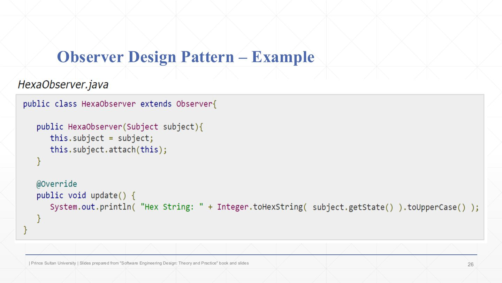
HexaObserver prints Integer.toHexString(subject.getState()).toUpperCase(). Adding a fourth observer (say, Roman numerals) would need no change to Subject.
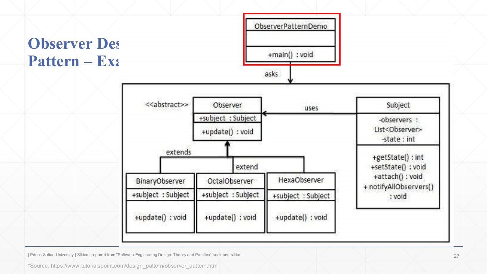
The diagram with the client ObserverPatternDemo outlined: it creates the subject and the observers, then changes the state.
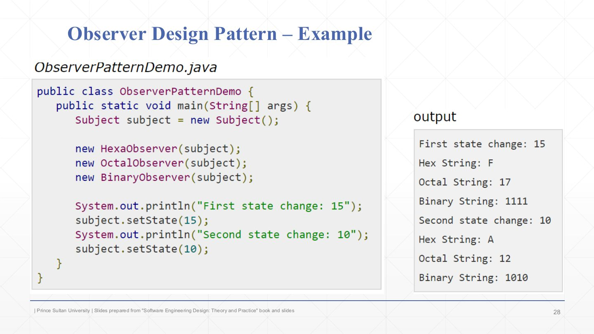
The client:
| Code | What it does |
|---|---|
Subject subject = new Subject(); | One subject. |
new HexaObserver(subject); new OctalObserver(subject); new BinaryObserver(subject); | Three observers; each attaches itself in its constructor. |
System.out.println("First state change: 15"); subject.setState(15); | One state change… |
System.out.println("Second state change: 10"); subject.setState(10); | …and another. |
Output: for 15, “Hex String: F”, “Octal String: 17”, “Binary String: 1111”; for 10, “A”, “12”, “1010”. Each setState call reached all three observers automatically, in the order they attached.
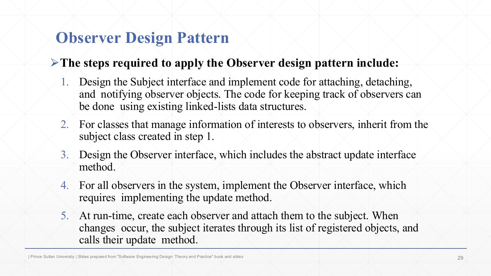
1. Design the Subject with code to attach, detach and notify observers (a linked list can keep track of them).
2. Classes that hold information observers care about inherit from that subject class.
3. Design the Observer interface with the abstract update() method.
4. Every observer implements Observer, i.e. its own update().
5. At run time, create the observers and attach them to the subject; on each change the subject iterates through its list and calls update() on each.
True or false: in the Observer pattern the subject must know the concrete classes of its observers.
False — It knows them only through the Observer interface, which is what keeps them loosely coupled and lets new observers be added freely.
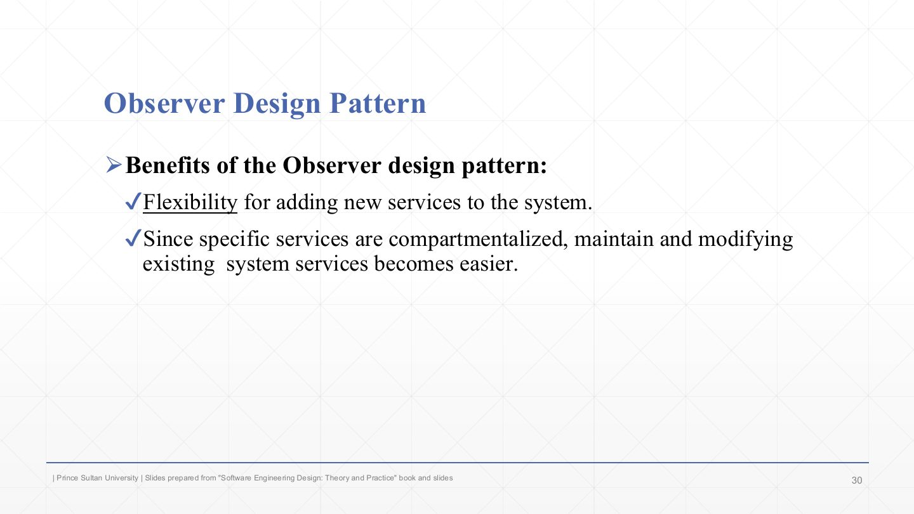
Flexibility to add new services: a new observer is just a new class that attaches itself.
Specific services are compartmentalised (each observer handles its own reaction), so maintaining and modifying them is easier. (Watch for: notification order, slow observers holding up the rest, and observers that are never detached.)
Give one benefit and one drawback of the Observer pattern.
Benefit: new observers (services) can be added without changing the subject; each reaction is isolated in its own class. Drawback: the order of notifications isn’t controlled, every change notifies every observer (cost), and forgotten observers can leak memory or react unexpectedly.
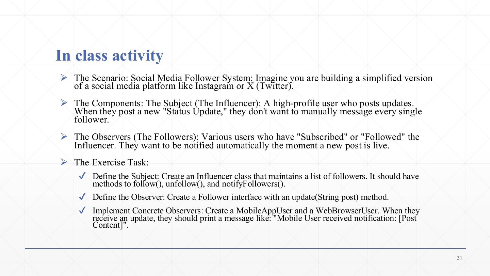
The exercise: a simplified Instagram/X follower system.
Subject = the influencer, who posts status updates and doesn’t want to message every follower by hand.
Observers = the followers, who want to be notified the moment a post goes live.
The tasks, as code:
| Code | What it does |
|---|---|
interface Follower { void update(String post); } | The observer interface. |
class Influencer { List<Follower> followers = new ArrayList<>(); void follow(Follower f) { followers.add(f); } void unfollow(Follower f) { followers.remove(f); } | The subject keeps its followers… |
void post(String text) { notifyFollowers(text); } void notifyFollowers(String p) { for (Follower f : followers) f.update(p); } } | …and notifies all of them on each post. |
class MobileAppUser implements Follower { public void update(String post) { System.out.println("Mobile User received notification: " + post); } } | Concrete observers (WebBrowserUser is the same with “Web User”). |
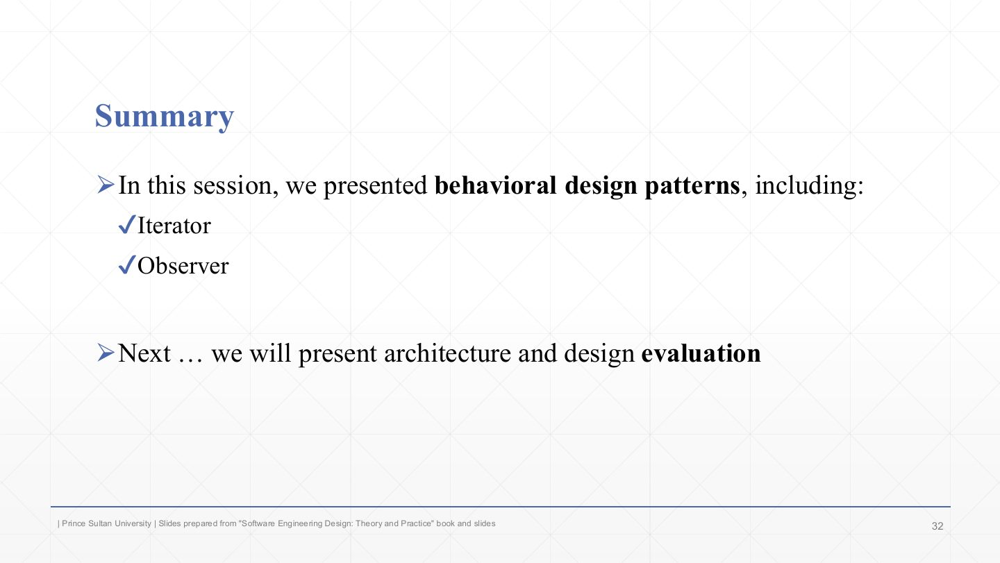
Behavioural patterns covered: Iterator (hide how a collection is traversed) and Observer (broadcast state changes to registered objects).
Next: architecture evaluation (Chapter 8).